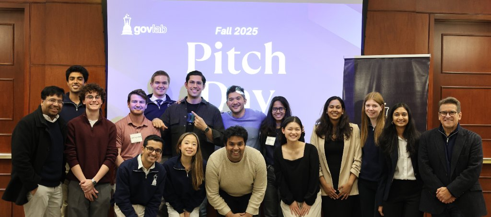

Where government meets entrepreneurship.
GovLab, short for Governance Lab, is a startup incubator at the Harvard Institute of Politics. In ten weeks, founders take a government-technology company from idea to MVP, go after their first government contracts and private-sector clients, and prepare a first capital raise.
- Length
- Ten weeks, one semester
- Format
- Weekly workshops with founders, investors, and government officials
- Finale
- Pitch Day, for a guaranteed finalist spot in Xfund’s $100,000 Xperiment Stake
- Where
- Harvard Kennedy School, 79 JFK Street, Cambridge
GovLab companies have raised $25M, from backers including Y Combinator, Andreessen Horowitz, Greylock, Unusual Ventures, Palantir, Dorm Room Fund, and SV Angel.

The program
A semester-long incubator for founders building technology for government. The semester runs in four stages.
- Idea to MVP
- Sharpen the thesis, build the technical foundations, and ship a working prototype within six weeks.
- MVP to customers
- Deploy with design partners in federal agencies, city governments, and enterprises.
- Customers to capital
- Prepare the pitch narrative, data room, and investor pipeline, then work toward a pre-seed or seed round.
- Pitch Day
- Present to a panel of VCs and government leaders in a judged competition.
What’s included
- Mentorship
- One-on-one sessions with founders, operators, and investors.
- Weekly workshops
- Practical sessions on fundraising, go-to-market strategy, government contracting, and technical architecture.
- Network
- Introductions across Harvard, MIT, venture funds, and the federal policy community.
- Pitch competition
- A chance to pitch VCs and senior officials for funding and partnerships.
Spring 2026 schedule
One workshop a week, with guests from startups, venture capital, law, and government.
-
Week 1
Introduction: How to 10x in 10 Weeks
-
Week 2
0 → 1 in GovTech
Blake Dority Co-Founder & CEO, Endox AI
-
Week 3
Write Code. Talk to Customers. Repeat.
Rishi Hazra Founder & CEO, Triangle Analytics
-
Week 4
Ethics of Deploying AI
Paulo Carvao Senior Fellow, Mossavar-Rahmani Center for Business and Government
Department of War & Anthropic
-
Week 5
MVP Demo Day & Mini-Pitches
Madeleine Smith Co-Founder & CEO, Civic Roundtable
-
Week 6
Securing Government Contracts
Mark Fine Assistant Secretary for Operational Services, Commonwealth of Massachusetts
-
Week 7
Navigating Law & Regulation While Building
Gerard O’Connor Founder, O’Connor Law Office, P.C.
-
Week 8
Raising Venture Capital 101
Giuseppe Stuto General Partner, Offscript VC
Armand Iorgulescu Co-Founder & CEO, Fed10 (YC W26)
-
Week 9
How to Build a Killer Pitch
Nick Morgan President, Public Words
-
Week 10
Pitch Day
Venture capitalists and government officials What happens on Pitch Day
Pitch Day
Week 10. Founders pitch a panel of venture capitalists and government officials in a judged competition for a guaranteed finalist spot in Xfund’s $100,000 Xperiment Stake. The top startup also wins an equity-free grant.
Past GovLab startups include Fed10, DeepMyst, Cookieless, and Wipp.
Join the next cohort
Leave your details and we’ll email you when applications for the next cohort open.
The same form works if you’d like to join the executive board, speak at a workshop, or get involved as an investor, government official, or tech leader.
Questions? Email govlab@harvardiop.org.